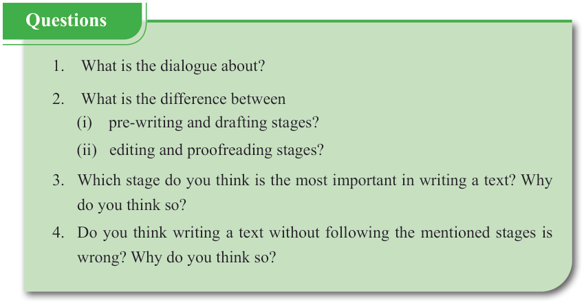

English for Secondary Schools Student’s Book Form One, printed page 160
Check for grammar, spelling, punctuation, consistency and arrangement of sentences.
So, I consider proofreading to be like tasting the food before serving it, right?
You are catching on! Proofreading is the final step like the last tasting before the meal leaves the kitchen. Therefore, you need to review the whole text, line by line, to identify and correct any grammatical errors and spelling mistakes.
Writing a good text is indeed like cooking a meal. Each step plays a crucial role in writing. I’m so excited because my struggling days with writing are over. Thank you, Hida!
My pleasure!
[Mnaya smiles, feeling inspired and ready to start his writing with a new understanding of the steps in writing]

Questions
-
1. What is the dialogue about?
-
2. What is the difference between
(i) pre-writing and drafting stages?
(ii) editing and proofreading stages?
-
3. Which stage do you think is the most important in writing a text? Why do you think so?
-
4. Do you think writing a text without following the mentioned stages is wrong? Why do you think so?